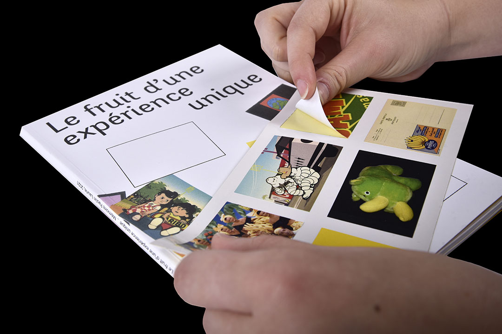
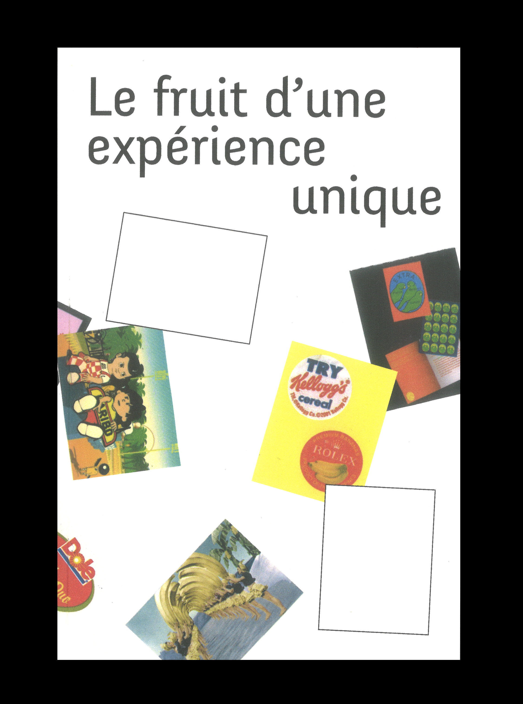
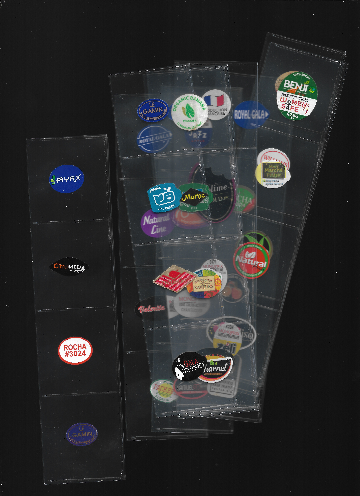
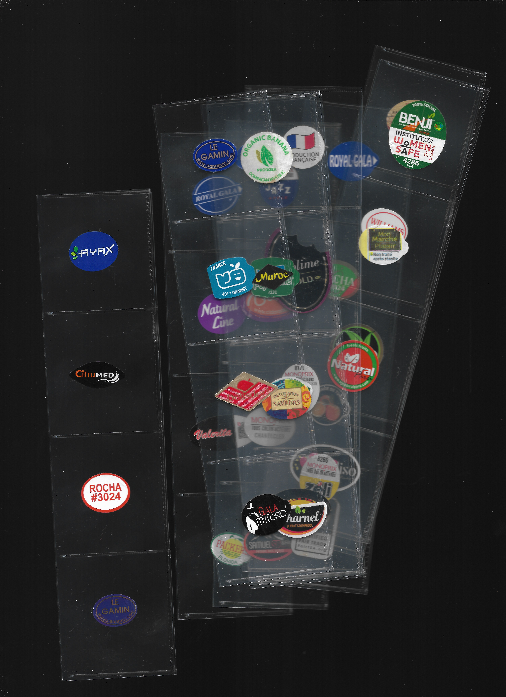
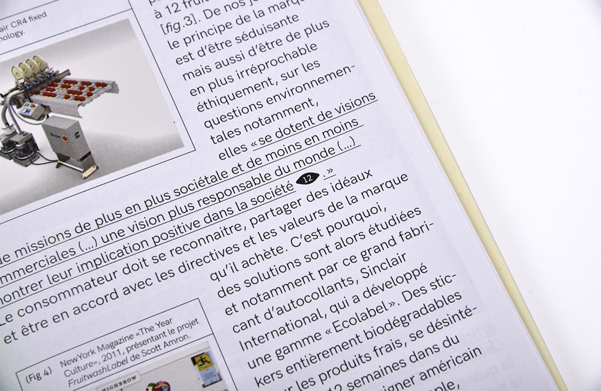
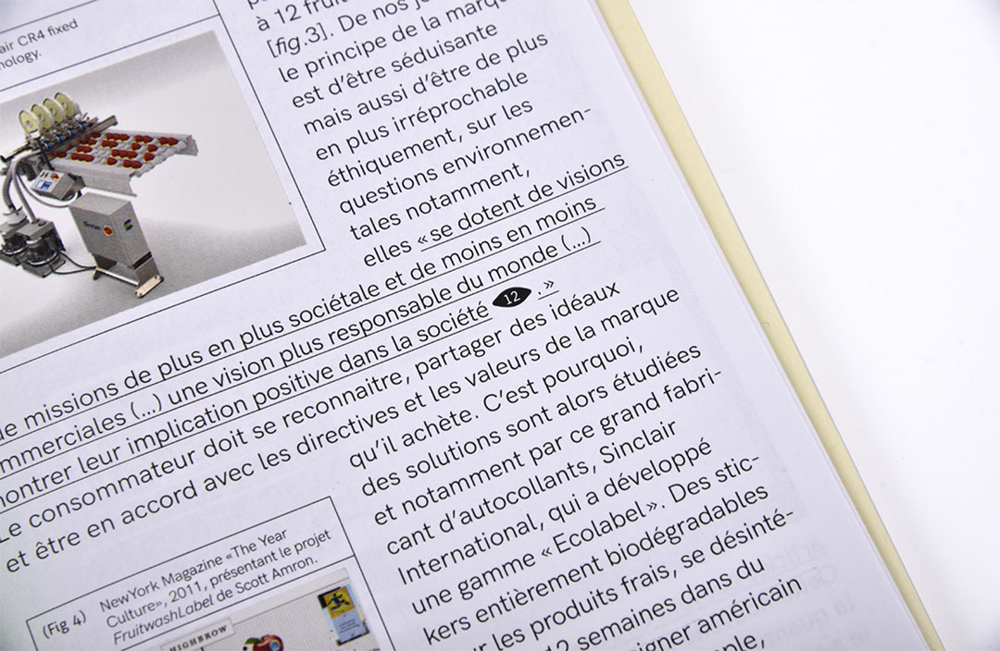
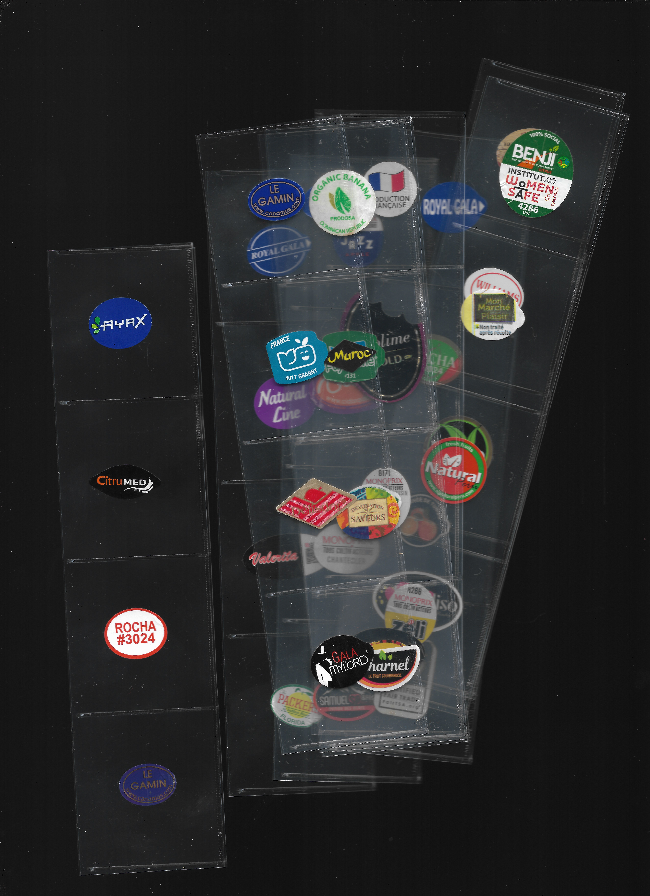
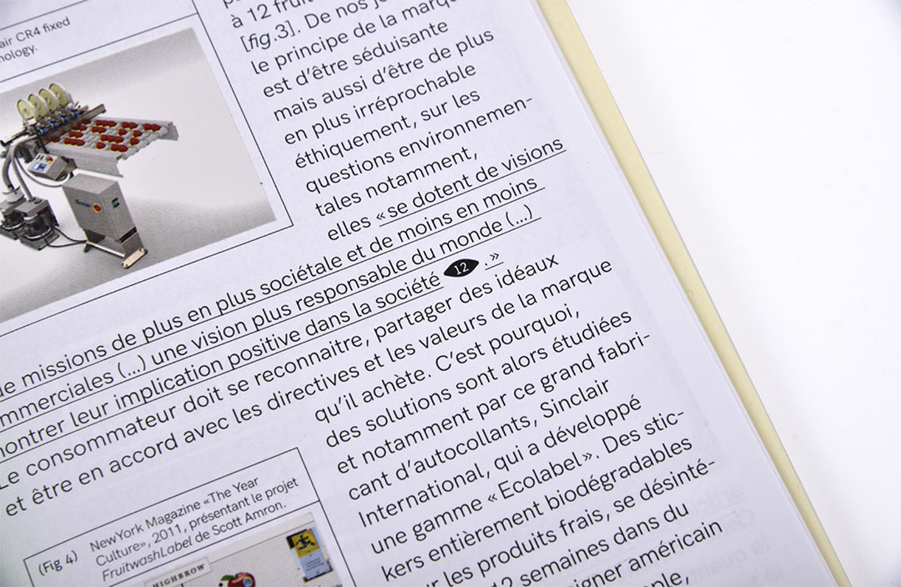

- ←
- Le fruit d’une expérience unique
- →
#STICKERS DE FRUITS #CONSOMMATION #LÉGUFRULABÉLOPHILE #COLLECTE

Mémoire-Impression numérique-20x27 cm
Mémoire sur les stickers de fruits composé de plusieurs annexes, une étude formelle, des échanges avec des légufrulabélophiles et des images autocollantes. Mon objectif premier est de s’intéresser à un signe qui fait tellement partie du quotidien qu’on ne le remarque plus. Du moins, un élément sur lequel on se pose très peu de questions quant à sa fonctionnalité, sa place, sa signification et son reflet qu’il peut avoir sur le monde actuel. Si infime qu’il peut paraître, dû à son échelle, le stickers de fruit en révèle beaucoup sur la mondialisation, le libre-échange des marchandises, notre manière de consommer ...

 



 



